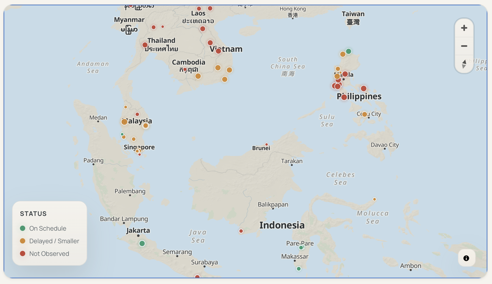
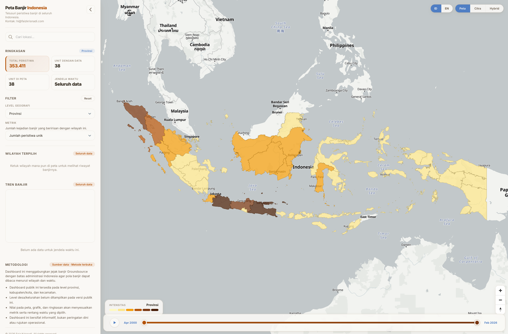

Paper to Power
A public geospatial audit of announced renewable energy projects across Southeast Asia.
This project compares public claims about utility-scale wind and solar projects with observed build evidence, turning regional energy announcements into a public-facing map, evidence explorer, and country comparison.

Peta Banjir Indonesia
A bilingual flood-event explorer for tracing how flood intensity shifts across Indonesia over time.
This dashboard combines map-based browsing, searchable administrative boundaries, and a 26-year timeline so visitors can inspect flood patterns by province, regency, and district without leaving the map view.

Sustainability GLEIF Matching Network
A public explainer for tracing sustainability commitments into verified company and ownership records.
This project matches major sustainability initiative rosters to GLEIF entities, then shows how far those commitments can be followed through reported ownership networks.